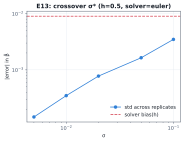
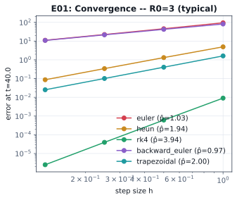

CSE 402 · Numerical Analysis, Simulation & Modeling
Solver accuracy, parameter recovery, and robustness to noise.
Section [Section] · Group [Group Number] · Final Project Defense
Supervised by [Supervisor Name]
The big question
We fit the SIR model to outbreak data using six solvers we wrote ourselves — from plain Forward Euler to adaptive Runge–Kutta — then asked when the solver you pick changes the answer.

Where the two lines cross is σ* — below it, solver bias (dashed) is bigger than noise; above it, noise (solid) wins.
Where we started
Fit the SIR model to outbreak data. Measured how confident we can be in the recovered β and γ. Showed accuracy drops as you sample less often.
They never ask which ODE solver produced those numbers, or how big a step size — the solver is just "whatever gets us the curve."
Our twist: we make the solver itself the experiment.
How we did it
The reference solution comes from an exact algebraic reduction of these equations — no numerical solver involved — so every accuracy claim is checked against the truth, not against "a finer guess."
What we found

Halve the step size, and each solver's error shrinks by exactly its own theoretical rate.
Measured order matches the predicted order almost exactly — the same error then carries straight through into the fitted β.
Wrapping up
Below the crossover noise level, which solver and step size you choose decides whether your epidemic estimate is trustworthy. Above it, more data matters more than a fancier solver.
Next: run the full-scale experiment grid, verify our historical 1666 Eyam outbreak data against the original source, and test whether the crossover still holds for stiffer, higher-dimensional epidemic models.